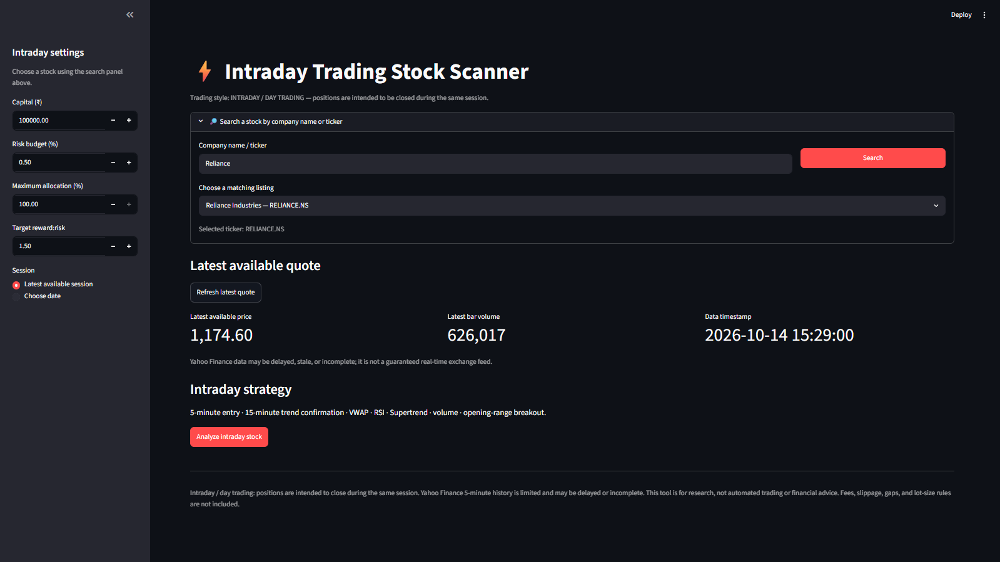

I turn data into decisions and ideas into working tools.
I build business intelligence dashboards, Python automation workflows
and FinTech research tools that help teams understand performance,
reduce repetitive work and make better-informed decisions.
OPEN TO PROJECTS & OPPORTUNITIESBASED IN INDIA · WORKING REMOTELY
FIELD NOTES / 001 SYSTEMS THINKING
From raw data to better decisions.
Signal over noiseDATA → INSIGHT
APPROACHBuild · Measure · Improve
FOCUSUseful, not just beautiful
SS / 26
SCROLL TO EXPLORE ↓01 — SELECTED WORK
Financial & business intelligence
Python automation & data workflows
AI-enabled products & workflow solutions
FinTech & trading research tools
SELECTED WORK / 2025—26
Projects with a purpose.
A portfolio of analytical platforms, financial technology products
and workflow solutions. Each project explains its intended use,
implementation approach and current development status.
An AI-enabled financial research concept designed to organise
market context, domain-specific knowledge and analytical
assistance within a unified user experience.
PythonFlaskSupabaseLLMs
Eight specialised agents cover financial education, personal
CFO support, portfolio analysis, technical and fundamental
analysis, goal planning, risk management and news sentiment.
The project was selected for the Sarvam Startup Program with
₹1,50,000 in API credits over six months, as described by the
project owner. Outputs support research and learning, not
guaranteed predictions or personalised investment advice.
A coded digital experience for a financial education initiative,
combining practical tools, structured learning journeys and
accessible explanations of financial concepts and markets.
A subscription analytics dashboard for reviewing recurring
revenue, customer acquisition, retention, customer lifetime
value and performance trends.
PythonSQLStreamlitPlotly
Business context: Subscription metrics can be fragmented across revenue, customer and plan-level reporting.
Approach: The demonstration workflow structures synthetic data, applies data-quality checks, calculates core subscription metrics and presents key trends through a consolidated dashboard.
Capabilities demonstrated: Data preparation, metric definition, exploratory analysis and dashboard communication. CAC and LTV use simplified estimates, and the revenue forecast is a linear trend. All figures are illustrative; no client outcomes are claimed.
A contact-centre analytics concept for monitoring call volumes,
call duration, response-time performance and channel mix.
Power BIKPI designOperations
The dashboard views illustrate summary KPIs, daily trends,
state and reason breakdowns, sentiment analysis, channel
performance and call-centre comparisons.
A structured trading journal concept for recording trade
outcomes, monitoring capital changes and reviewing performance
over time.
ExcelFormulasRisk tracking
A spreadsheet-based planning tool. The preview is illustrative;
formulas and chart references should be reviewed before the
workbook is used for operational decisions.

08 / ALGORITHMIC TRADING RESEARCH PROTOTYPE
Algorithmic Trading Research Platform
A Python-based trading research platform combining dedicated
swing-trading and intraday stock scanners. The system applies
predefined technical rules, evaluates market conditions and
organises potential trading setups into a structured
decision-support workflow for Indian equities.
System Overview: The platform separates swing-trading analysis from intraday screening while using a common framework for market-data processing, technical-indicator calculations, rule evaluation and risk-based trade planning.
Swing Trading Scanner: Evaluates daily trend alignment using EMA 20, EMA 50, EMA 100 and EMA 200. RSI, Supertrend, ATR, volume confirmation and 20-day breakout conditions contribute to the assessment of potential swing-trading setups.
Intraday Trading Scanner: Combines five-minute entry analysis with 15-minute trend confirmation. The rule set incorporates VWAP, EMA 9/21, RSI, Supertrend, ATR, volume analysis and opening-range breakout conditions using the 9:15–9:30 AM market window.
Signal Evaluation: Predefined conditions are evaluated to identify candidate setups and summarise how closely each setup aligns with the configured strategy rules. Signals are analytical outputs, not guarantees of future price direction.
Risk Management: Configurable capital and risk parameters support estimated position quantity, risk per trade, stop-loss references, capital allocation and reward-to-risk targets. These calculations help structure trade planning before a decision is made.
Market Data & Indicators: Available market data is processed to calculate technical indicators and evaluate the configured conditions. Data availability, timestamps and market-session alignment can affect the resulting analysis.
Technology & Workflow: Python, Pandas and NumPy support data handling and indicator calculations, while Streamlit provides the interface for scanner inputs, configuration and analytical outputs.
Research Objective: The goal is to make the screening process more structured and repeatable, reduce reliance on ad hoc manual checks and provide clearer visibility into potential setups and their associated risk parameters.
Current scope: Research and decision support only. This
prototype does not establish strategy profitability and is
not connected to a broker for automated order execution.
Comprehensive historical backtesting, transaction-cost and
slippage modelling, paper-trading validation, data-quality
controls and production-grade risk checks remain important
validation and development priorities. Market data may be
delayed or incomplete.
A trade-planning worksheet for reviewing account-level risk,
open exposure, planned trade risk and journal performance
across trading activities.
ExcelRisk budgetCSV import
Market values are entered manually or imported through CSV.
The workstation does not use a live TradingView feed.
Project status labels distinguish development work, demonstrations
and planning tools. Prototype screens and synthetic data are
illustrative and should not be interpreted as live financial
information.
FREELANCE SERVICES
Practical solutions for business workflows.
Choose a focused engagement with a clear outcome: a dashboard,
automated workflow, research tool or financial model. I start by
understanding the business problem, confirming the scope and
agreeing on a practical deliverable.
01
▦
Financial & Business Intelligence
Turn business and financial data into reliable reporting, clear performance dashboards and decision-ready insights.
Prices are indicative introductory rates. Tools are supplied by
enquiry rather than direct download. These spreadsheets support
educational planning and are not financial advice; outputs are
estimates.
ABOUT SAI / ANALYTICS · FINANCE · PRODUCT
Analytical by approach. Practical by design.
TOP SKILLS
Financial Data Analytics · Swing Trading & Market Technical
Analysis · Dashboards · Fundamental Analysis · Portfolio
Management · Business Research
I work across data analytics, finance and product development,
turning requirements into usable dashboards, repeatable workflows
and decision-support tools. My approach prioritises clear
assumptions, maintainable processes and practical outputs—not
presentation alone.
I am developing QuadraForge Finance as an independent financial
education initiative, alongside projects such as QuadraAI and
QuadraTerminal. These projects explore ways to make financial
learning, market research and analytical workflows more accessible.
They are presented according to their current development status,
without promising investment outcomes.
What I'm focused on
Financial and business intelligence
Python automation, data cleaning and ETL workflows
FinTech product development and research tools
Systematic trading research and risk-aware analysis
Clear documentation and practical deliverables
Current projects
QuadraTerminal — a market-intelligence workspace
under development, bringing together market research, technical
and fundamental analysis, scenario analysis, portfolio insights
and market-data workflows.
QuadraAI — an AI-powered financial learning and
research assistant built around eight specialised agents for
education, personal finance, portfolio analysis, technical and
fundamental research, goal planning, risk management and
news sentiment.
I also build financial data pipelines, market analytics,
portfolio research workflows, BI dashboards and practical
spreadsheet tools.
Professional experience
MAR–MAY 2026
Data Analyst Intern · Unified Mentor
Built Python and SQL analytics workflows; cleaned,
transformed and validated data; developed Power BI and
Tableau dashboards; automated recurring data preparation
and ETL tasks.
JUL–SEP 2025
Research Analyst Intern · Savvy Merit
Researched 30+ datasets across equities and market data,
automated recurring analysis with Python, and prepared
sector- and portfolio-level research reports.
Education & certification
Bachelor of Computer Applications (BCA)Symbiosis International University · 2023–2026
IBM Data Analyst Professional CertificateIBM · Python, SQL and data analysis
I'm interested in connecting with people working in finance,
AI, analytics, product development and financial technology.
For project enquiries and professional opportunities, email me
directly.
Need a dashboard, an automated workflow or a financial research
tool? Email the problem you want to solve, the output you need
and your target timeline. I will review the requirements and
suggest a practical scope and next step.